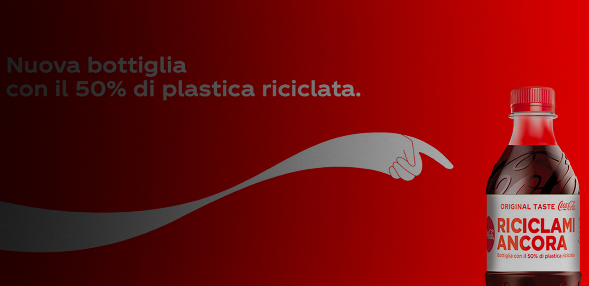
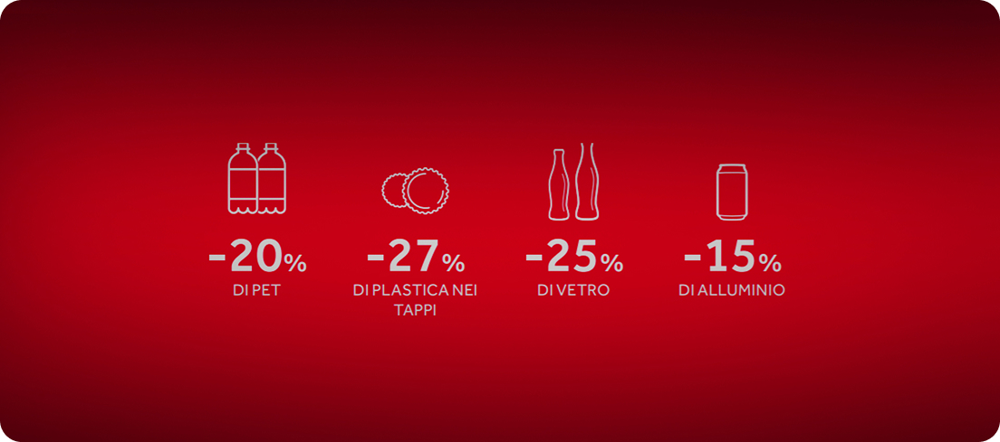

Cambiamento
ecosostenibile in corso
Passi dal sapore
di un nuovo futuro
L’impatto ambientale di Coca-Cola, tra inquinamento da plastica, consumo di risorse idriche ed emissioni, e sulle iniziative e controversie legate al suo percorso di innovazione, che procede verso la sostenibilità.

Packaging, riciclo e obiettivi.
Coca-Cola ha sviluppato una strategia di sostenibilità che riguarda diversi aspetti ambientali, in particolare l’uso dell’acqua, la gestione dei rifiuti e le emissioni . Sul sito ufficiale, l’azienda afferma di aver restituito più del 100% dell’acqua utilizzata nei propri prodotti finiti dal 2015 e di voler raggiungere questo risultato in tutti i siti ad alto rischio entro il 2035. Questa politica riflette la crescente attenzione alla gestione delle risorse idriche e al supporto delle comunità locali, soprattutto in un contesto globale caratterizzato dalla scarsità d’acqua.
Un elemento centrale della strategia riguarda il packaging Coca-Cola ha investito in impianti e tecnologie di riciclo come quello di PET in Mongolia, capace di riciclare più plastica di quanta ne venga consumata nel paese. L’azienda lavora anche sulla riduzione del peso delle confezioni e sull’aumento dell’uso di materiali riciclati Tra gli obiettivi dichiarati ci sono il packaging **100% riciclabile entro il 2025 e l’utilizzo di almeno il 50% di materiale riciclato entro il 2030 Successivamente, alcuni target sono stati aggiornati al 2035, con l’obiettivo di utilizzare tra il 30% e il 35% di plastica riciclata e raccogliere tra il 70% e il 75% delle bottiglie e lattine immesse sul mercato.

Iniziative di sostegno...
Coca-Cola promuove la sostenibilità attraverso collaborazioni con organizzazioni internazionali come il World Wide Fund for Nature e il United Nations Development Programme, partecipando a iniziative per ridurre i rifiuti plastici, migliorare il riciclo e favorire la circolarità dei materiali. A livello locale sostiene anche progetti di recupero della plastica marina e di riutilizzo dei materiali.
Tuttavia, l’azienda è stata criticata per il forte impatto ambientale legato alla plastica: nel 2019 un rapporto di Break Free From Plastic l’ha indicata come il maggiore inquinatore da plastica al mondo. Queste critiche mostrano la difficoltà di conciliare la dimensione globale delle attività di Coca-Cola con gli obiettivi di sostenibilità ambientale.

Ridurre le emissioni nocive.
Coca-Cola punta a ridurre le emissioni di gas serra lungo tutta la propria catena produttiva, intervenendo non solo sulla produzione, ma anche sulla distribuzione e sull’approvvigionamento degli ingredienti, con l’obiettivo di allinearsi alla traiettoria climatica di 1,5 °C entro il 2035.
L’azienda ha quindi avviato diverse iniziative per limitare il proprio impatto ambientale e rendere più sostenibile il sistema produttivo. Tuttavia, deve ancora confrontarsi con crescenti critiche legate all’inquinamento e con la difficoltà di conciliare sviluppo commerciale, esigenze di mercato e responsabilità ambientale.

Nonostante questi impegni, diverse organizzazioni hanno espresso critiche. Un report di Oceana evidenzia che la produzione di plastica potrebbe continuare ad aumentare fino a superare 9,1 miliardi di libbre all’anno entro il 2030, criticando anche l’abbandono di obiettivi sul packaging riutilizzabile. Anche Greenpeace USA ha denunciato alcune promesse come “abbandonate”. Inoltre, il rinvio di alcuni target al 2035 è stato interpretato come una riduzione dell’ambizione, mentre restano problemi legati alla disponibilità di plastica riciclata e alle infrastrutture di riciclo a livello globale. Nel confronto tra obiettivi e critiche emergono sia punti di convergenza sia divergenze: entrambe le parti riconoscono l’importanza del riciclo e dell’economia circolare, ma le critiche sottolineano che non basta senza una reale riduzione della plastica vergine. Il caso Coca-Cola evidenzia così la complessità della transizione verso modelli realmente sostenibili.